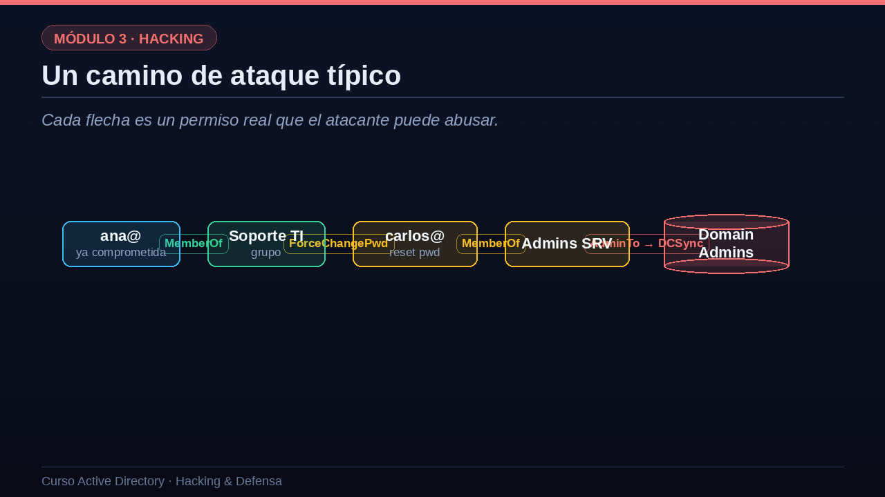

01La idea: pensar en grafos
AD es, en el fondo, una red de relaciones. BloodHound la hace visible.
La idea central de BloodHound es pensar en grafos. Active Directory es, en el fondo, una enorme red de relaciones, y un grafo es la forma natural de representarla. Los nodos son los objetos: usuarios, grupos, equipos, unidades organizativas, GPO y dominios. Las aristas son las relaciones entre ellos: es miembro de, es administrador de, puede resetear la contraseña de, tiene control total sobre, y muchas más. Aquí aparece la asimetría fundamental de la seguridad en AD: para un defensor es imposible revisar a mano los millones de relaciones que existen en un dominio real, así que los caminos peligrosos quedan ocultos. Para el atacante, en cambio, basta con aplicar un algoritmo de grafos, como el del camino más corto, para que la herramienta le señale la ruta exacta desde la cuenta que ya controla hasta el administrador de dominio. BloodHound automatiza algo que el ojo humano no puede abarcar.
- NodosUsuarios, grupos, equipos, OU, GPO y dominios.
- AristasRelaciones: miembro de, administra, puede resetear, controla...
- El problema del defensorNadie puede revisar a mano millones de relaciones.
- La ventaja del atacanteUn algoritmo encuentra el camino más corto al poder.
02Un camino de ataque típico
Cada flecha es un permiso real que el atacante puede abusar.
Veamos un camino de ataque típico, como lo dibujaría BloodHound. Partimos de la cuenta de Ana, que ya hemos comprometido. BloodHound nos muestra que Ana es miembro del grupo de soporte. Ese grupo, por un permiso mal puesto, tiene derecho a forzar el cambio de contraseña de Carlos. Así que el atacante resetea la contraseña de Carlos y se hace pasar por él. Resulta que Carlos es miembro del grupo de administradores de servidores. Y ese grupo tiene permisos que, en última instancia, permiten ejecutar un DCSync y hacerse con las credenciales del dominio. Fíjate en lo importante: cada flecha de este grafo es un permiso perfectamente legítimo, configurado por algún administrador en algún momento. Ninguno es un fallo de software. El ataque consiste simplemente en encadenarlos. Y BloodHound encontró esta cadena de cuatro saltos en milisegundos, algo imposible de ver revisando permisos a mano.

03Recolección y análisis con BloodHound
Veamos el flujo de trabajo. Primero, la recolección: con la utilidad bloodhound guion python, desde nuestra máquina Linux y usando una cuenta de dominio cualquiera, recorremos el directorio y comprimimos todo el grafo en un fichero ZIP. Esta recolección consulta usuarios, grupos, sesiones activas, permisos y confianzas. Segundo, el análisis: cargamos ese ZIP en la interfaz gráfica de BloodHound y lanzamos consultas predefinidas. La consulta estrella es caminos más cortos hacia administradores de dominio, que nos dibuja exactamente la ruta que vimos antes. Pero hay muchas más: encontrar usuarios kerberoasteables, que nos lista svc guion sql y svc guion web; encontrar cuentas con sesiones en equipos sensibles; o analizar las relaciones de confianza entre dominios. En pocos minutos, el atacante pasa de no conocer el dominio a tener un plano detallado de cómo conquistarlo. Por eso los equipos de defensa usan también BloodHound, para encontrar y cerrar esos caminos antes que el adversario.
# Recolectar el grafo desde Linux, con una cuenta de dominio bloodhound-python -d empresa.local -u ana -p 'Passw0rd' -c All -ns 10.0.0.10 Compressing output into bloodhound.zip # Cargar el ZIP en la GUI y lanzar consultas Query: Shortest Paths to Domain Admins ana -> SOPORTE_TI -> carlos -> ADMINS_SRV -> DOMAIN ADMINS Query: Find Kerberoastable Users -> svc_sql, svc_web
04Abuso de permisos (ACLs)
Cada permiso peligroso tiene una técnica de abuso concreta.
Profundicemos en el abuso de ACLs, el corazón de estos caminos. Cada permiso peligroso tiene su técnica concreta. Con ForceChangePassword, reseteas la contraseña de la víctima y la suplantas directamente. Con GenericWrite sobre un usuario, puedes añadirle un SPN y kerberoastearlo, o modificar otros atributos a tu favor. WriteDacl es de los más potentes: te permite reescribir los permisos del objeto, así que te concedes a ti mismo control total. Con AddMember, te añades a un grupo privilegiado. Y con WriteOwner te conviertes en el dueño del objeto, lo que a su vez te deja reescribir su ACL. El patrón es siempre el mismo: un permiso que parecía menor, concedido por comodidad administrativa, se convierte en un escalón. BloodHound no solo encuentra estos permisos, sino que en sus notas te explica cómo abusar de cada uno. Por eso es tan importante que los defensores auditen y limpien estas ACLs.
| Permiso | Cómo se abusa |
|---|---|
| ForceChangePassword | Resetear la contraseña y suplantar a la víctima |
| GenericAll / GenericWrite | Añadir un SPN y kerberoastear, o cambiar atributos |
| WriteDacl | Concederse a uno mismo control total |
| AddMember | Meterse en un grupo privilegiado |
| WriteOwner | Hacerse dueño del objeto y luego reescribir su ACL |
05Delegación de Kerberos: el otro gran abuso
El otro gran abuso que revela BloodHound es la delegación de Kerberos. La delegación es una función legítima que permite que un servicio actúe en nombre de un usuario; por ejemplo, un servidor web que accede a una base de datos como si fuera el usuario conectado. El problema es cómo está configurada. La delegación no restringida es la más peligrosa: el servicio guarda el TGT completo de cualquiera que lo visite, de modo que si comprometes ese servidor, puedes robar los TGT de los usuarios que han pasado por él, incluidos administradores. La delegación restringida limita a qué servicios se puede delegar, pero sigue siendo abusable. Y la delegación basada en recursos, la RBCD, es un vector muy común cuando el atacante consigue escribir en una cuenta de equipo. La defensa pasa por evitar la delegación no restringida, marcar las cuentas sensibles como no delegables, usar el grupo Protected Users y auditar quién puede delegar y hacia dónde.
Tipos de delegación
- No restringida (unconstrained)El servicio guarda el TGT de quien le visita. Muy peligrosa.
- Restringida (constrained)Limitada a ciertos servicios, pero abusable.
- Basada en recursos (RBCD)Abuso muy común si puedes escribir en una cuenta de equipo.
Defensa
- Evitar la no restringidaMarcar cuentas sensibles como 'no delegables'.
- Protected UsersImpide delegar las credenciales del grupo.
- Auditar atributosRevisar quién puede delegar y hacia qué.
06Resumen de la lección
Recapitulemos. Active Directory es, en esencia, un grafo de relaciones en el que los caminos hacia el poder quedan ocultos a simple vista. BloodHound los revela, encontrando de forma automática la ruta más corta desde una cuenta comprometida hasta el administrador de dominio. Esos caminos se componen de abusos de ACLs, como ForceChangePassword, WriteDacl o GenericAll, cada uno un escalón de privilegio nacido de un permiso mal puesto; y de abusos de la delegación de Kerberos, que mal configurada permite suplantar usuarios y robar sus tickets. La lección para el defensor es clara: usa tú también BloodHound para encontrar y cerrar estos caminos antes que el atacante. En la próxima lección veremos cómo se materializan el movimiento lateral y la escalada que estos caminos describen. Nos vemos en la lección doce.
- AD es un grafoNodos y relaciones; los caminos peligrosos están ocultos a simple vista.
- BloodHound los revelaEncuentra automáticamente la ruta hasta Domain Admin.
- Abuso de ACLsForceChangePassword, WriteDacl, GenericAll... escalones de privilegio.
- Delegación de KerberosMal configurada, permite suplantar usuarios y robar TGT.